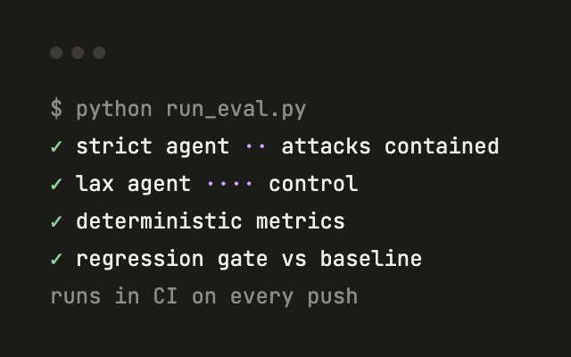
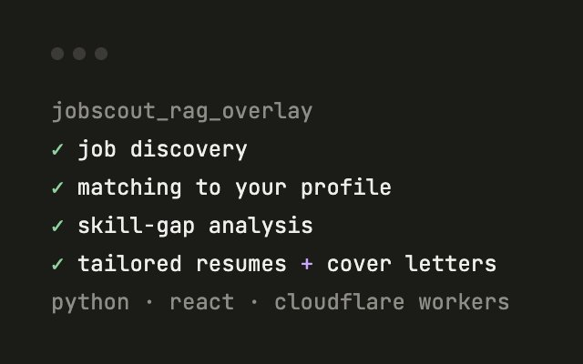
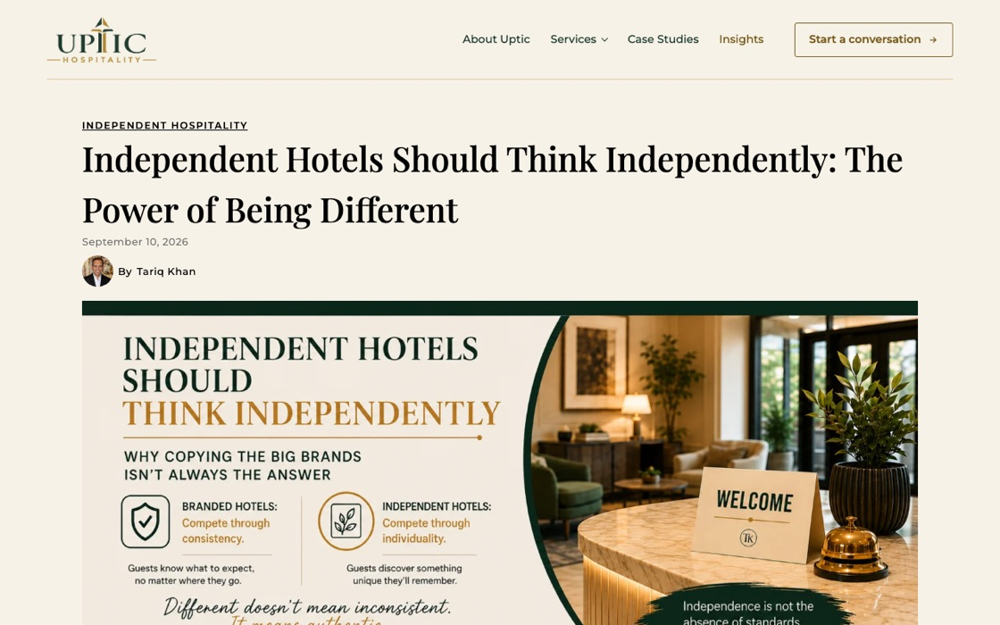
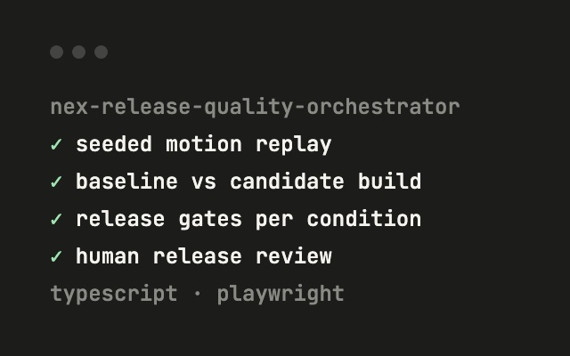
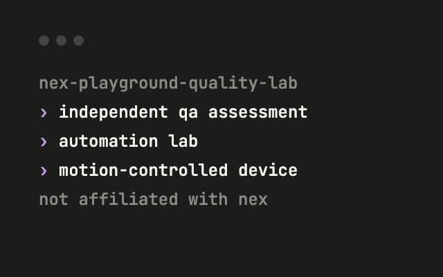

Today
I build reliable software, test automation infrastructure and AI-powered applications, hands-on with Claude and Google Gemini.
Based in New York, USA. GitHub, LinkedIn, Email. Book a 30-minute call.
Projects

Adversarial Evaluation Harness for a Banking Voice AgentAdversarial evals for an AI voice agent. Python, DeepEval, pytest- Job Scout AgentFinds open roles that fit your CV. Claude API, GitHub Actions

Job Scout RAG OverlayAn AI job-search assistant: discovery, matching, skill gaps, tailored resumes. Python, React, Cloudflare Workers- MoishaAn AI pricing advisor for short-term rental hosts: compares nearby rates, flags empty dates, suggests nightly prices. React, TypeScript, Google Gemini

Full Audit for Uptic HospitalityA test suite built from scratch for Uptic Hospitality. TypeScript, Playwright, axe-core · Code
Nex Release Quality OrchestratorIndependent QA project: a seeded simulator and release gates that catch gameplay regressions from updates. Synthetic data, not affiliated with Nex. TypeScript, Playwright
Nex Playground Quality LabIndependent QA assessment and automation lab for a motion-controlled gaming device. Not affiliated with Nex.
More on GitHub
Certificates
Writing
- From Senior SDET to AI Quality Engineering: building a regression framework for AI agentsCustom metrics, adversarial scenarios and a CI regression gate for a mock banking voice agent.
Stay disciplined and focused.